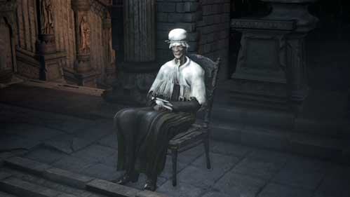

Lonely Old Woman |
|
|---|---|
|  | |
| General Info | |
| Location | Drops |
| Central Yharnam | Sedative |
The Lonely Old Woman is an NPC in Bloodborne.
Old Woman found in Central Yharnam area. Bitter and alone, she seems to begrudge the Hunter.
Lonely Old Woman Information
She blames some events on the hunters/outsiders at first. She can be sent to either Iosefka's Clinic or Oedon Chapel after they have been unlocked as safe locations.
Location
- The Lonely Old Woman is a survivor that can be found at Central Yharnam, located beyond the area with many Infected Hounds on the path to the sewer entrance. Upon first encounter there is a dog barking at her door.
Destination
- If sent to the Oedon Chapel:
- She will be located in a chair just down the steps in the chapel interior, nearest to the door leading towards Alfred.
- She has gradual changes in attitude towards the player. She is initially ungrateful, continuing to blame the Hunter for the bad things that have been happening. During the grey sky/night/overcast, she seems to be in a state of despair or madness, eventually only responding with panicked sobs/hysteria. After beating seven bosses[unconfirmed], she is very kind. If you answer "I have my woes" at this point, she will give the Hunter an increasing amount of Sedatives. 1 the first time, 2 the second, 3 the third.
- Upon using the "I have my woes" option 3 times, she will go out and look for more Sedatives, leaving a note to the player on her chair. When she comes back if the same option is used again she will give the player another Sedative and venture off again to find more. Upon returning again to the chapel, the Oedon Chapel Dweller will remark how she was murdered outside. You can venture through the door to the left of the lamp to find her body with remarkable bloodstains around her and one more Sedative on her corpse.
- It is possible for her to be killed by other NPCs that you've sent to the Chapel.
- If sent to Iosefka's Clinic:
- Iosefka will reward you with 2 Numbing Mist and 1 insight.
- In the clinic, a Celestial Mob can be found staring at the medicine rack in the back room at the end of the hall. Drops a Sedative if killed.
Dialogue
Upon killing dog outside her house:
Oh, you're a hunter, aren't ya? Then, well, do you know of any safe places?"
Upon knocking on her door:
I've heard, I have. Shutting up indoors isn't always enough. If you hunters got off your arses, we wouldn't be in this mess. You're obligated to help me, you hear? So what'll it be? Are you gonna tell me, or not? "
"What is it now? I've much better ways to pass the time. Unless... you've found me a nice, safe place?"
Choosing 'No':
Yeah, I should've known. Ya good-for-nothing... No respect for the elderly is what that is! Yeah, fat lot of good you outsiders do. Go on, admit it, you think we're all mad, don't ya? Well, go and stuff it! I know all yer tricks!"
After going to Oedon Chapel:
Oh, How did we ever get into this mess *sobs*"
"Stay away from me. I know all your tricks."
Sedative Dialogue:
"Hehehehheh... Oh, Welcome home dear. What's wrong? Anything you'd like to tell me? Oh, whats the matter? Are you in a bind again?
(Choosing 'I have my share of woes.') "Oh, my. You poor thing. But don't you worry. heh... h-heh... This will help you forget. Forget your troubles, forget your cares.... hehehmm heh heh..."
(Choosing "No") "Oh good. What a relief. But you cant bottle everything up inside. You musn't be afraid to share."
Gallery

 Anonymous
Anonymous
- Anonymous
Kind of a bizarre NPC. Her "story" amounts to very little, and the reward for interacting with her in the long term is pretty negligible.
- Anonymous
- Anonymous
- Anonymous
I killed her and when I first met her, what should I do? how do I get it back?how to go further along the storyline and what to do in general? I play on the playstation
- Anonymous
Ever since I’ve gotten one sedative from her, only one, I’ve had what looks like a buff next to my quick item. Is there any info on this? Is doesn’t come from any blood gem, and it’s persisted through deaths and returning to the Dream.
- Anonymous
Sedatives are specifically created at Byrgenwerth. She is old. Maybe an old member of Byrgenwerth? She has access to a lot of sedatives. Caryll?
- Anonymous
If she is giving you sedatives, and you kill her, then she says "It's your father's blood...." If you check the Sedatives description, it states that it is thick human blood used to calm the nerves. Meaning that she has been using her dead(presumably) husband's blood to sedate not only you, but herself as she's going through this. It might be why she's near a grave when she dies trying to get more sedatives. She could possibly be at the grave of her dead husband harvesting his body for blood. Blood that has obviously coagulated and thickened.
- Anonymous
If you kill her, she mutters “It’s your father’s blood.” As she dies.... very odd.
- Anonymous
I got the sedatives from her after engaging but not beating the Shadow of Yarnham, also i have yet to kill the Darkbeast Paarl So I had killed at the time (about 50 minutes ago I guess haha cause now I'm done with the Shadow) Cleric Beast, Father Gascoigne, Blood-starved beast, the Witch of Hemwick and Vicar Amelia Though I did already go to Forsaken Cainhurst Castle, Lecture Building first floor and only light the Nightmare Frontier lamp (I plan to do that after I kill Martyr Logarius and maybe Rom the Vacuous Spider).
- Anonymous
I killed Rom and when I returned she was gone. Just a bloodstain around her chair and a sedative but I had never gotten sedatives before. What could it mean??
- Anonymous
Not that I dislike nice, good looking elf girls doing the wedding dance for me all night long, but reality has nothing to do with this (and excuse me here) "Tolkien beauty fascism" were old and ugly equals always beeing "evil". Sure BB is only a game but at some point your brain says gg if you march too far into Middle-Earth extremes.
- Anonymous
She also says "Oh, the good old days, what a laugh, eh?" after she says "Ohh, how did we ever get into this mess?" and sobs.
- Anonymous
on the red moon phase, the time she was suffering from dementia, she thinks that you're her son or daughter, which is why she is incredibly kind. later on, i decided to kill her bc i was about to finish the game, and her dying words are "it's your father's blood..."
im assuming that her husband was abusive? which is why she's lonely? i dont know. i just wanted to add this little piece of info here.
- Anonymous
Holy crap. I'm on NG+1 and wanted to get the grandma to the cathedral (as I forgot before; I beat Cleric Beast, Gasgoine and Amelia meanwhile) and I arrived at the place but there was Patches. He gave me the same (or almost the same) dialogue like he gives in Forbidden Woods, about the shrouded old church next to the cathedral and gave me a Tonsil Stone. It was for sure grandma's house. He killed her I guess.
- Anonymous
I got mad at how ungrateful she was so I killed her. I had to do 2 or 3 heavy attacks to do so. And the old lady at the entrance got scared of me, and after i left and came back she blamed herself for the murder of the ungrateful lady.
- Anonymous
There's so many different potentially crazy theories regarding how she dies, but like there's an Amygdala sitting on the bloody roof and I've never read anything about the evil nightmare monster being a potential killer... ah well, maybe he only tries killing me.
- Anonymous
When I first met her and even after I sent her to the safe Cathedral Ward, I was appalled at how despicably ungrateful she was to me. Later, once she started griefing in anguish I felt a slight lightening of my anxious contempt towards her, as such despair is the rightful act of karma. You can guess I was very surprised and felt a bit awkward when later I came back to her welcoming me and wanting to.... ease my pain. I received her offerings as forms of apology, but I grudgingly thought to myself, "These still don't make me forgive you for how you acted towards me when we first met." But when I returned again I found the note on her chair of her leave, probably to get more medicine for me. Not knowing what to feel, I sat down in front of the chair and waited, compelled enough to wait as the note said... As I sat, I thought "This Cathedral Ward is the only safe place around, a place she wanted to take shelter in for protection when we first met, but why would she knowingly leave? That would just be a stupid act of suicide. Has she finally lost sanity to that point? Wait... is it because I told her I was in need of more healing? Is she risking her life out there just to ease my pain because I asked her to? Alright, I forgive you for all the bad you've shown me, just don't throw your life away like this!" I returned again, relieved to see she made it back safely. Feeling as though she would feel horrible and despairingly useless if I didn't take the gifts she risked her life for, I accepted them. Then came the moment when she again didn't have any to give me. Taking a moment to understand what I've done, I realized that I've made a horrible mistake: I asked her to leave again so selfishly and I couldn't take it back. When I returned, I found the note again and prayed for her safety, but something caught my eye when I turned to look outside: an item outside? No.. it couldn't be..? I hastingly rushed out there to find her bloodsplattered corpse next to a grave with the gift she left to get for me. Riddled with grief, I left a message to give her corpse proper care, and returned to the only one left in the Cathedral Ward. He reassured what I guessed but didn't entirely accept, that she was murdered, and when he said it could've been a person coming from the outside, I strikingly remembered that right before I came there, I dealt with Alfred and the queen, and that the grave area was within the path he would've taken back to where I first met him. I rushed over there, preparing to question him and probably killing him out of the burning desire for revenge I felt, but it was too late..... Now I will never know if he was the one to do it, and I will forever remember the regret I felt that day. I wonder if that grave is for somebody she knew, and she was visiting their grave before she came back? Even coming here, I find no answers to these questions...
- Anonymous
After getting all the sedatives from her (1, then 2, then 3) she will eventually leave a note asking that you wait a little longer. Eventually she returns and will again give you 1 more sedative. Next time you return she will be gone again and another note will be there asking you to wait again, however, if you look just outside the door next to her chair, you will see her dead. On her body is a single sedative, which I assume she went out to get for you. Sad really.
- Anonymous
She was kind to me even before beating Rom, she started speaking to me kindly after I beat Shadows of Yharnam.
I think she drugged her child to death in order to save it from the nightmare. This action drives her to insanity and she ends up mistaking you for her child as she relives it again. Guilt ridden, she overdoses out in the graveyard.
- Anonymous
"After beating Rom/during blood moon [unconfirmed], she is very kind. If you answer "I have my woes" at this point, she will give the Hunter an increasing amount of Sedatives. 1 the first time, 2 the second, 3 the third." I don't know who rom is but I got her to give me all that right after defeating amelia and I don't think the blood moon appear until the spider battle in the sea (is that Rom?)
- Anonymous
I only did this once, so any confirmation would be nice. I have come to suspect that she only leaves the Cathedral after you exhaust her supply is Sedatives. I went looking for her, and went back to knock on her door at her house. No answer, but she reappeared back at the Cathedral with more Sedatives. After I took her supply she left again. I forgot to go check her house before progressing the game and she died. This leads me to believe that unless you go after her and clear the streets, she dies on the way back home. So try knocking on her door as soon as she vanishes.
- Anonymous
It wasn't the Abhorrent Beast, or any beast for that matter, as I had already murdered the Abhorrent Beast when I met him in the Woods. So did she commit suicide due to the madness the Great Ones have brought? Was she tired of being alone, frightened and snapped? Or was she really murdered? I wanna say it was suicide thanks to the dialogue after killing Vicar Amelia. "Oh, How did we ever get into this mess *sobs*" "Stay away from me. I know all your tricks." Or did I trigger her suicide by taking all of her sedatives, leaving her to go into a frenzy?
- Anonymous
- Anonymous
The sky has turned dark, I have beaten the shadows of yharnim bossfight and lit the lantern by byrgenwoth and immediately teleported back to the hunter's dream, she gives me sedatives even though I haven't even enterd the academy.
I used the wall jump early in the game and noticed that the man that gives you the Tonsil Stone and the Lonely Old Woman switch locations. She now is afraid of me and constantly tells me to leave her alone. Wondering if I can still send her to the chapel?
- Anonymous
That strange creature sitting on the floor, or whatever it was, had me fooled. I immediately assumed it was a creature and struck it, killing it instantly. It wasn't until after when he said, "I just wanted to help..." that I realized I had possibly made an error. After having watched this, I realize there are all these twists and turns to the story. Honestly, it is aggravating because none of it is direct. When I arrived at the Suspicious Beggar, I did not even have the option of telling him to go anywhere, which is likely a result of these multiple NPC mistakes. Incredibly lame.
- Anonymous
I have a theory the amygdala grabbed her while she was possibly searching the corpse of the man wearing the hunter set, that or the saw the amygdla, went mad, and killed herself.
- Anonymous
When you kill her she says "it's your fathers blood" and drops one sedative.
- Anonymous
I went to get her to Odeon Chapel, and when I knocked the door the dialog that tells me to go to the church plays. Now pretty much every single door I knock on has the same dialog. Please help!
- Anonymous
It's not that she becomes grateful and nice towards you. She just snapped and lost her mind, now she thinks you're her dead(?) daughter. The daughter probably died from frenzy.
I already killed Cleric Beast, Father Cascoigne and Bloodstarved Beast - and then I spoke to the Old Lady.
- Anonymous
I confirm that she is very kind after beating Cleric Beast, Father Gascoigne, Witch of Hemwick, Blood-Starved Beast, Darkbeast Paarl, Vicar Amelia and Shadow of Yharnam (Patch 1.05).
- Anonymous
If you kill her, she says a dialogue "It was your... Father's blood" Is that new? Before i dont remember her saying that when killing her.


{kind=link}
{kind=link}
She's so sweet, I love the granny
8
+10
-1